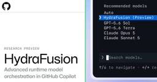

The GitHub Blog
https://github.blog/
Updates, ideas, and inspiration from GitHub to help developers build and design software.
フィード

Project HydraFusion: Frontier quality via multi-model orchestration 2
2
The GitHub Blog
In controlled offline evaluations, HydraFusion’s selective coding workflows matched or exceeded the evaluated Opus 5 baseline while reducing estimated workflow cost. Now available as a research preview in GitHub Copilot.The post Project HydraFusion: Frontier quality via multi-model orchestration appeared first on The GitHub Blog.
1日前
GitHub Copilot app for Beginners: Run several agents at once
The GitHub Blog
Learn how to run parallel agents in the GitHub Copilot app, and experience the moment it stops feeling scary and starts feeling powerful.The post GitHub Copilot app for Beginners: Run several agents at once appeared first on The GitHub Blog.
2日前

Decoding the new AI lingo: Loops, harnesses, squads, hill climbing… oh my!
The GitHub Blog
From loop engineering to harnesses, squads, and open weights, the GitHub Podcast breaks down the AI terms showing up in developer conversations.The post Decoding the new AI lingo: Loops, harnesses, squads, hill climbing… oh my! appeared first on The GitHub Blog.
3日前
How we make AI coding more cost efficient without sacrificing task quality
The GitHub Blog
Why shorter outputs can cost more, and how GitHub Copilot reduces wasted work across the complete coding task.The post How we make AI coding more cost efficient without sacrificing task quality appeared first on The GitHub Blog.
3日前

OpenClaw went viral. Meet the maintainers building and securing it.
The GitHub Blog
OpenClaw is the fastest-growing project in GitHub history. Peter Steinberger and several maintainers share what they learned in the project's first six months.The post OpenClaw went viral. Meet the maintainers building and securing it. appeared first on The GitHub Blog.
9日前
GitHub Copilot app for Beginners: Automate Dependabot pull request triage
The GitHub Blog
Managing library updates can be tedious at times. Learn how the GitHub Copilot app can handle this type of repetitive task.The post GitHub Copilot app for Beginners: Automate Dependabot pull request triage appeared first on The GitHub Blog.
10日前
How to evaluate LLMs before production
The GitHub Blog
These are the lessons we learned evaluating LLMs for real-world secret scanning.The post How to evaluate LLMs before production appeared first on The GitHub Blog.
11日前
Your alt text passes automated checks. That doesn’t mean it’s any good.
The GitHub Blog
We built a plugin for the GitHub Accessibility Scanner to make sure your alt text is actually accessible. Here's how it works.The post Your alt text passes automated checks. That doesn’t mean it’s any good. appeared first on The GitHub Blog.
12日前
The August 17 outage, and the work ahead
The GitHub Blog
An update on the August 17 outage and the steps we're taking to improve reliability.The post The August 17 outage, and the work ahead appeared first on The GitHub Blog.
16日前
GitHub Copilot app for Beginners: Managing your work
The GitHub Blog
If you’re juggling multiple Copilot sessions, use the My work pane to track what's in flight, what's done, and what's next.The post GitHub Copilot app for Beginners: Managing your work appeared first on The GitHub Blog.
17日前